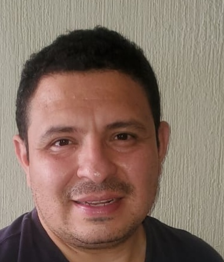

Hamlet Martinez | WDD 130
Hi my name is Hamlet Martinez I am happy to be in this new course, I like video games, workout, anime and video games, I am married and I have a daugther. I am so happy to be part of the LDS church
Hi my name is Hamlet Martinez I am happy to be in this new course, I like video games, workout, anime and video games, I am married and I have a daugther. I am so happy to be part of the LDS church